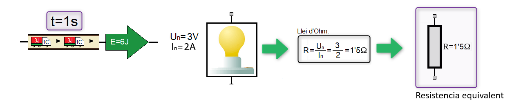
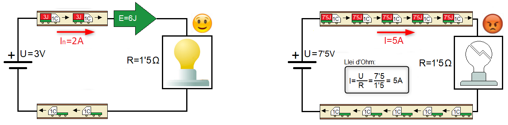
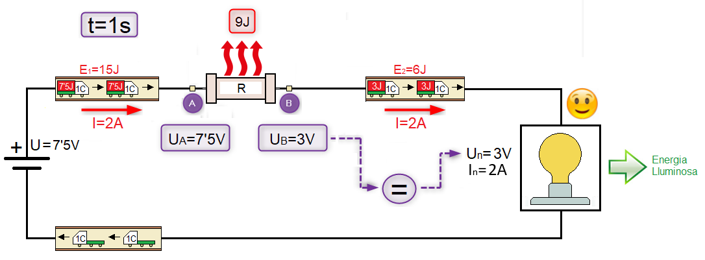
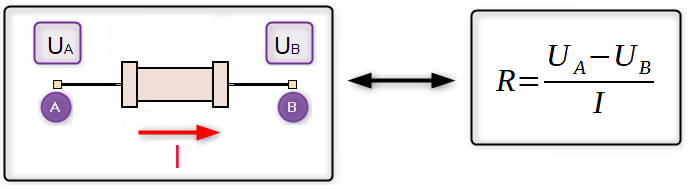
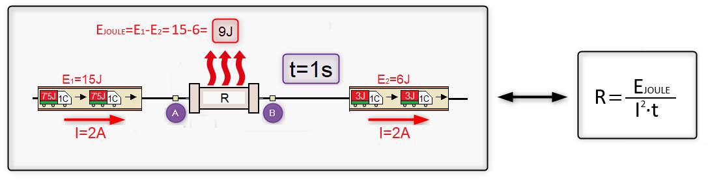

Eliminació d'energia en els circuit elèctrics
Funcionament nominal d'un receptor elèctric
El paràmetres que defineixen el funcionament d'un receptor elèctric són la seua tensió nominal (Un) i la intensitat nominal (In):
- Tensió nominal: defineix la quantitat d'energia que ha de transportar cada coulomb ("camió")
- Intensitat nominal: defineix el nombre de coulombs que fan falta per transportar l'energia que necessita el receptor elèctric.

Anem a comparar ara el funcionament de la bombeta amb tensió nominal (Un=3V) i amb una tensió superior a la nominal (U=7'5V):

Bé, tal com podeu veure en la imatge anterior, en augmentar la tensió i segons la llei d'ohm augmentarà la Intensitat de corrent (I=2A → I=5A), es a dir, hi ha més coulombs que transporten energia i a més, la quantitat d'energia transportada per cada coulomb és més gran (E=3J → E=7'5J) . El resultat és que el receptor elèctric, en aquest cas una bombeta, rep un excés d'energia que no pot convertir. El receptor elèctric no està preparat per dissipar aquest excés d'energia i si no és desconnectat del circuit elèctric s'acabarà cremant.
Resistència Limitadora
De vegades, hem de connectar receptors elèctrics que tenen una tensió nominal inferior a la del generador del circuit elèctric. Aleshores, per evitat la sobretensió afegirem al nostre circuit una resistència elèctrica que té dos funcions:

- Reduir la intensitat de corrent fins al valor nominal (I=5A → In=2A)
- Mitjançant l'efecte joule, la resistència ha de dissipar l'excés de energia que transporten els coulomb quan surten de la pila (E=7'5J → E=3J). Dit d'una altra manera, la resistència elèctrica ha de provocar una caiguda de tensió a la sortida de la pila de (U=4'5V=UA-UB=7'5V-3V).
Les resistències elèctriques provoquen pèrdues d'energia per efecte joule en els circuits elèctrics i aquestes pèrdues es manifesten amb una disminució de la tensió o "caiguda de tensió".
Càlcul de la Resistència limitadora
1. Com sabem la intensitat de corrent i la caiguda de tensió entres els punts A i B podem aplicar la llei d'Ohm per calcular el valor de la resistència limitadora (R).

2. Com sabem la intensitat de corrent i l'energia que s'ha de dissipar per segon en la resistència limitadora podem utilitzar l'efecte joule per calcular el valor de la resistència limitadora (R).
